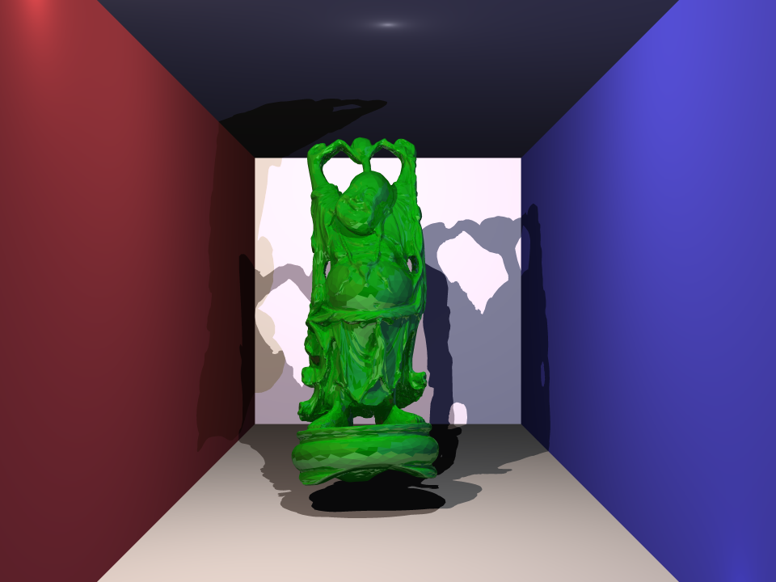

The following images were rendered at 960 pixels by 720 pixels.
Because of the acceleration structure,
it was possible to finish rendering each image within one to two hours.
Happy Buddha, glossy red material
Happy Buddha, glossy green material
Happy Buddha, matte pink material
Stanford Bunny, aquamarine material
Stanford Bunny, glass material (missing caustics)
Stanford Bunny, metallic gold material
Stanford Bunny, matte pink material
Stanford Bunny, glossy red material
Stanford Dragon, aquamarine material
Stanford Dragon, mirror material
Stanford Dragon, glossy red material
Stanford Dragon, glass material (no caustics)
Floating Spheres, glass material (no caustics)